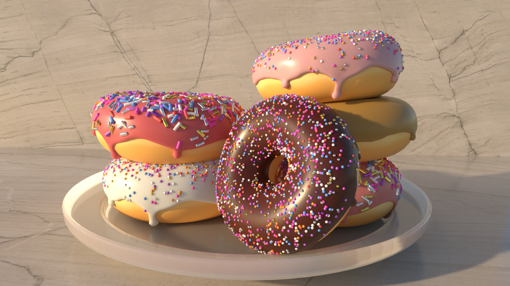
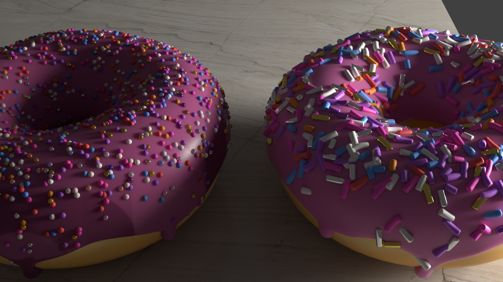
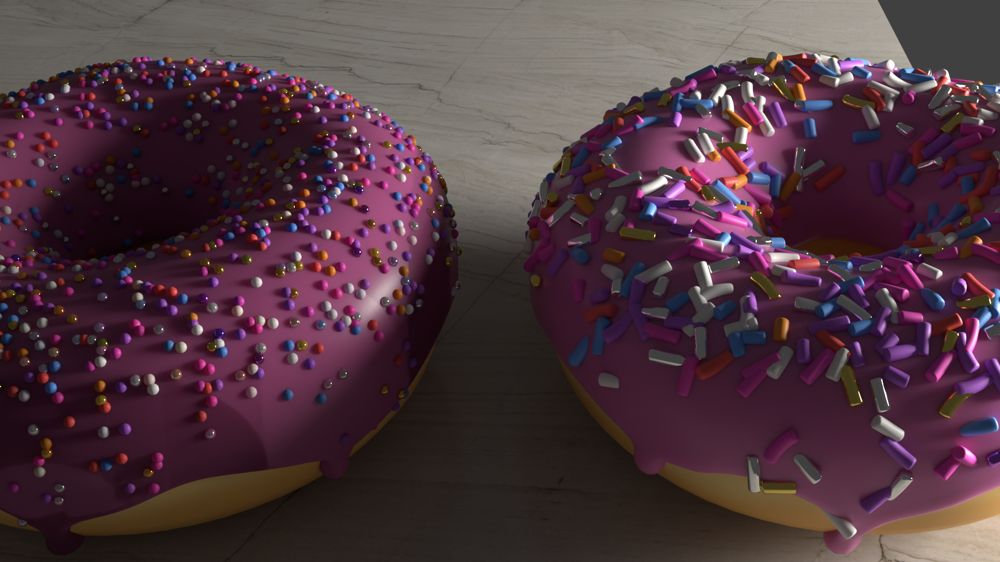

Blender (3D) Projects
 


The first photo is my Finished 3D Donut. This is a fully finished 3D model of a donut that I created entirely in Blender. It demonstrates my skills in modeling, texturing, and rendering to achieve a realistic final result.
The second photo Partially Finished 3D Bedroom. This is a work-in-progress of a 3D bedroom, also fully modeled by me. It showcases my ability to design detailed interior spaces, with attention to furniture, layout, and lighting.
The third photo Second Finished 3D Donut. Another completed 3D donut project where I further refined my techniques in Blender, focusing on creating realistic materials and textures for the donut and surrounding objects.
The fourth photo Second Partially Finished 3D Bedroom. This is a second, ongoing 3D bedroom design. Like the first, it’s fully made by me and highlights my growing skills in architectural modeling, interior design, and 3D environment creation.